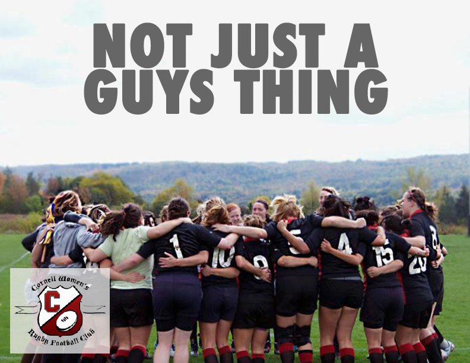
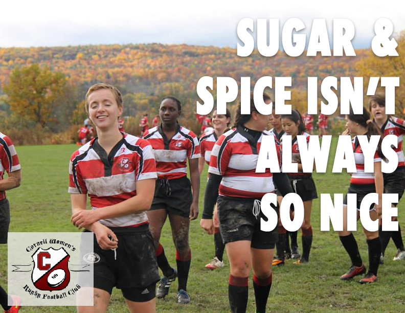
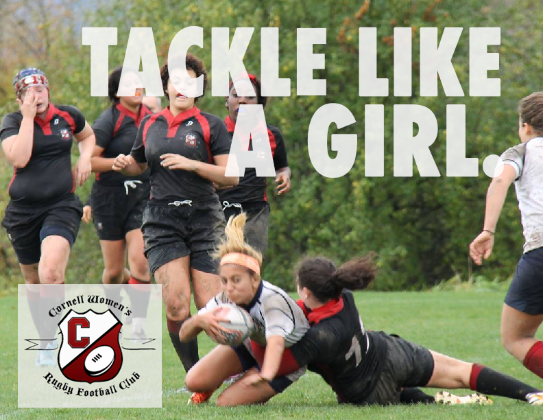
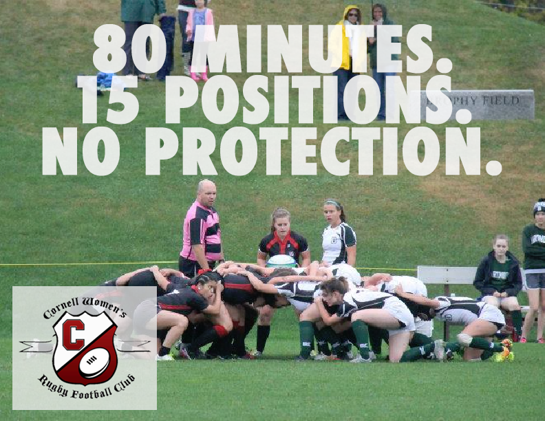

Rugby Recruitment Campaign
From Spring 2016 through Fall 2017, I was the Recruitment chair of CWRFC (Cornell Women's Rugby Football Club). In an effort to raise the club's visibility on campus and attract possible new players, I designed recruitment material to be posted the club's social media and throughout campus.
 The posters and quartercards are designed in a way to highlight our team's bond, our spirit, and especially our strength. People often have the idea that women cannot play rugby or only very fit, extremely muscular women can play rugby. This misconception has unfortunately scared girls who are curious about the sport from coming out to try it. Thus, by showing players of all sizes on our posters and presenting strong women confidently playing rugby, I hoped to quiet these fears and motivate more girls to try the sport.
 